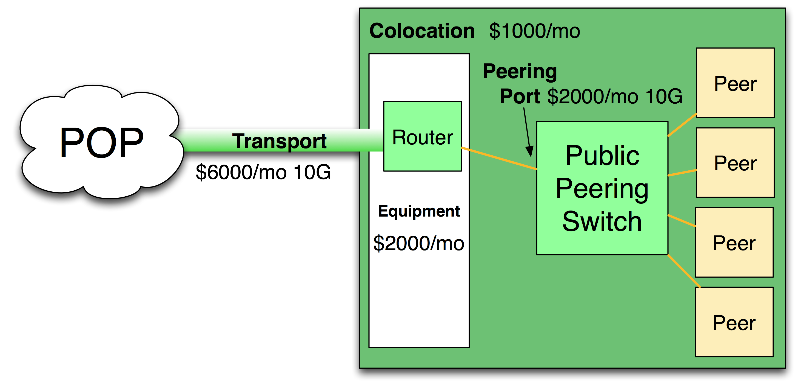
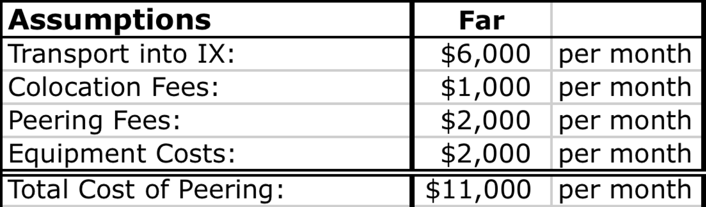
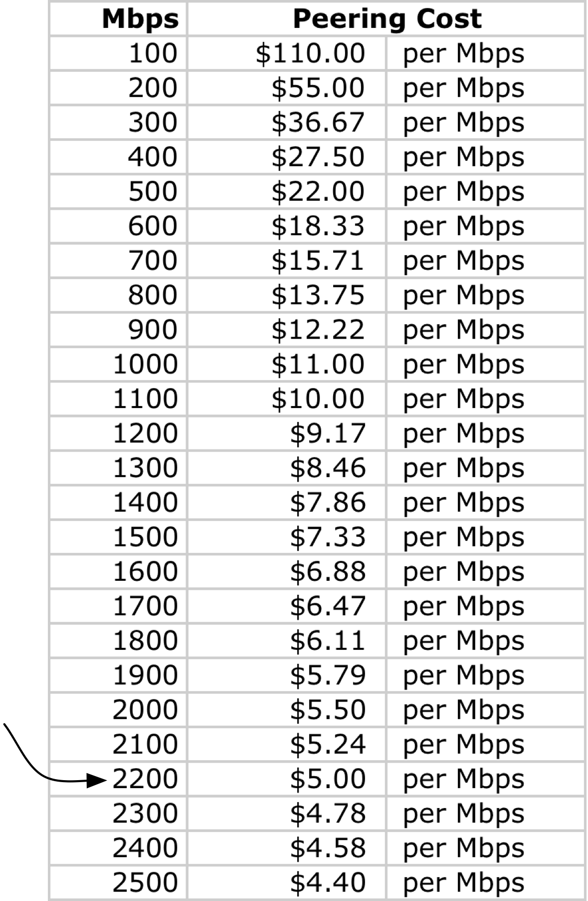

Chapter 5 - The Business Case for Peering
This chapter is written primarily for a Chief Financial Officer at an ISP who asks the question: “Tell me why we should burn a port that might otherwise be generating revenue from customers.”
I will present a systematic analysis for determining if and when peering makes financial sense. This topic is one of the most popular, and the analysis I present is done by just about every entity looking to attach at the core of the Internet. This chapter is an essential one for all interested in Internet Peering.
The Cost of Peering
To illustrate the Peering vs. Transit decision, let’s enhance our previous peering model with some specific market price points collected at the DE-CIX Customer Meeting in Frankfurt, Germany, in late 2010.
Transport Cost Data Points. At the DE-CIX 2010 meeting, Edward Punt (KPN) and Sven Engelhardt (TiNet) shared pricing estimates for three categories of 10G transport circuit into the European IXP. They said that pricing tends to vary based on how close one is to the IXP:
Local: $2,000 per month for a local 10G connection into an IXP
Nearby: $4,000 per month for a 10G originating in a nearby country
Far: $6,000 per month for a Pan-European 10G circuit
At the meeting, a Slovenian ISP validated these price points. He shared with the group that the 10G circuit from Slovenia into the DE-CIX in Frankfurt was quoted as high as $7000 per month, and that from Budapest to the DE-CIX was about $6000 per month. So these numbers appear to be in the right ballpark for our analysis.
Peering with 10G Ethernet
We will first determine the unit cost of peering at 10G.
Let’s start with the assumption that the ISP is coming from far away and will purchase a 10G transport circuit into an IXP for $6,000/month.
At the IXP, let’s assume the 10G peering port costs $2,000 per month, and a powered half rack costs $1000/month, as shown in Figure 5-1.
We will add some equipment costs into the mix as well. A Cisco 6509 might amortize to about $2,000 per month.

Figure 5-1. Sample cost of peering at an IXP.
With all of these costs accounted for, we see a monthly cost of peering of $11,000 per month, as shown in Table 5-1.
Table 5-1. The cost of peering using cross-continent transport.

Calculating the Cost of Peering
Question: Given these figures, how much does it cost to peer 1Gbps over this 10Gbps infrastructure?
To answer this question, we need to normalize peering costs into the same terms as transit costs. We need to compare both peering and transit on a Megabit-per-second basis. To do this we divide the fixed monthly cost of peering by the amount of traffic we will peer across the infrastructure.
For example, since peering costs $11,000 per month, and we will peer 1Gbps (1000Mbps) over that infrastructure, we will realize a cost of $11,000/1000Mbps= $11.00 per Mbps when that 1Gbps of traffic is peered.
As shown in Table 5-2, when we peer away 2.2Gbps of our traffic, the unit cost for traffic exchange is $5/Mbps.
Now let’s generalize the analysis.
Table 5-2. Allocating the costs of peering across the amount of traffic peered.

Generalized Analysis
Four key peering metrics describe the effectiveness of peering:
- The Peering Break-Even Point answers the question, “How much traffic do I have to peer for free to save enough money to cover the cost of peering?”
- The Effective Peering Bandwidth answers the question, “What is the maximum amount of traffic I can realistically push through the peering infrastructure?”
- The Effective Peering Range answers the question, “Where is the peering sweet spot – the peering bandwidth range where peering is financially rational?”
- The Minimum Cost for Traffic Exchange answers the question, “What is the best possible unit cost for peering?”
I will walk through each of these peering vs. transit calculations in turn.